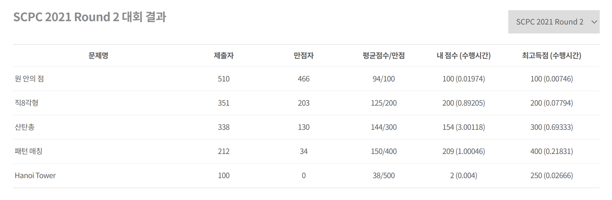
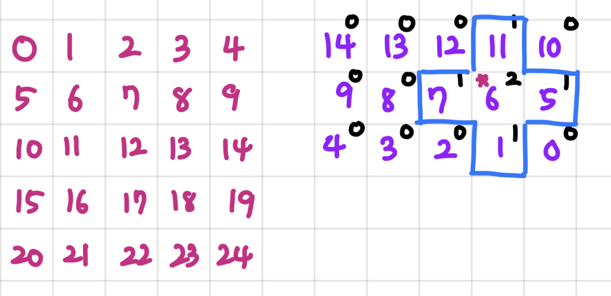

삼성 SCPC 예선 2라운드 풀이 / 후기
- Intro / Preperation
- Problem 1. 원 안의 점 (09:09 AC)
- Problem 2. 직8각형 (09:37 AC)
- Problem 4. 패턴 매칭 (10:56 209/400점)
- Problem 3. 산탄총 (16:54 154/300점)
- Problem 5. Hanoi Tower (20:55 2/500점)
- 대회를 마치며
Round 1 후기는 여기에, 작년 Round 2 후기는 티스토리 에 있습니다.
작년에 이어, 정말 말도 안되게 고통받았습니다. 제가 참가해본 CP 대회를 통틀어 가장 힘들고 지치는 대회가 아닌가 싶습니다.
구현 코드는 항상 그렇듯 Github Repo 에 있습니다.
Intro / Preperation
작년 (2020년 9월 초) 대회와 비교하여 제 PS 실력에서는 별로 다를게 없습니다. 이제는 CP보다는 이론적인 공부에 집중하려는 생각에서 그렇기도 하고, 학교 공부가 빡세서 그렇기도 했습니다.
그렇지만 체감상, Codejam 때도 그렇고 그냥 최근 코포를 몇번 쳐보면서 느낀건 작년 이맘때는 코포기준 거품 2100이었다면 지금은 그냥 2100은 돌아갈 수 있을 것 같습니다.
듀얼 모니터와 우분투 데스크탑 환경, 12시간 대회임을 고려해서 무제한 커피와 박카스 등을 세팅했습니다.
결과 면에서는, 본선 진출은 딱 컷 사이에 있는 듯 합니다. 결과 사진은 여기에 붙이고, 마지막에 조금 적어보겠습니다. 
문제 설명은 대회가 끝나고 아직 문제가 공개되지 않았으므로 간단하게는 적겠습니다. 본선이 끝나면 Practice에 문제가 공개되는 것으로 알고 있습니다.
Problem 1. 원 안의 점 (09:09 AC)
- 반지름이 $R$이고 중심이 원점인 원 안에 들어있는 정수 격자점의 개수를 세는 문제.
- 정말 이 문제가 맞다고? 라는 생각이 들었습니다.
- $x$좌표를 1부터 $R$까지 돌면서, 격자점의 개수를 세 주면 됩니다. $\sqrt{R^2 - x^2}$ 을 이용하되, 딱 경계에 있는 점들을 빼 주어야 함을 유의하면 어렵지 않습니다.
Problem 2. 직8각형 (09:37 AC)
- 직8각형이란, 한 변의 길이가 $K$인 정사각형을 십자로 5개 붙였을 때, 그 Convex Hull을 이루는 8각형으로 정의합니다.
- 주어진 점 $(x_i, y_i)$ 8개를 조금씩 움직여서, 정수 좌표의 직8각형을 만들고자 합니다.
- 최소 이동 거리를 구하는 문제입니다. (이동 거리는 $l_0$ 거리로 잽니다)
- 먼저, $l_0$ 거리를 쓰면 $x$ 방향과 $y$ 방향이 독립적임을 관찰합니다.
- $x$ 좌표를 Minimize 하기 위해, 먼저 점 8개가 각각 직8각형의 어느 점으로 움직일지를 정합니다. 직8각형의 왼쪽 아래 점을 $(u, v)$로 하고, 이를 움직이면서 이동거리를 최소화한다고 생각하겠습니다.
- 이제, 어떤 점 $u$를 찍으면, 주어진 8개의 점이 어디로 가야 하는지 정확히 알고 있습니다.
- 구체적으로 $\abs{u - x_1} + \abs{u - (x_1 + K)} + \dots$ 와 같은 형태의, 절댓값 8개로 구성된 식이 나옵니다. 이미 8개의 점의 permutation을 고정했으므로, $u$를 잘 정해서 절댓값 함수 $\abs{u - t_i}$ 의 합을 최소화하는 문제입니다.
- 여러 절댓값들의 합의 최소는 중간값임이 잘 알려져 있습니다.
- 이제, 각 Permutation에 대해 $8 \log 8$ (8개의 수 정렬) 에 옵티멀한 $x$좌표를 구할 수 있습니다. $y$도 마찬가지이므로, $8! * (2 * 8 \log 8)$ 시간에 안정적으로 한 케이스씩 해결해낼 수 있습니다.
- 여담 : 처음에는 8각형 기하인줄 알고 기겁했습니다. 8각형을 잘 그리는 기하였다면 포기하고 자러 갔을지도 모르겠습니다.
3번 문제에 대해 쓸 말이 많아서 4번을 먼저 적습니다.
Problem 4. 패턴 매칭 (10:56 209/400점)
- 두 문자열이 ‘매칭’ 된다는 것을, 다음과 같이 정의하겠습니다.
- 임의의 인덱스 $i, j$에 대해, $a_i = a_j$ if and only if $b_i = b_j$
- 이제, $N = 2e6$ 크기의 문자열 $S$에서, 수백 정도 크기의 문자열 패턴 수십 개가 주어집니다. 이 패턴이 각각 몇 번 등장하는지를 세는 문제입니다.
- 각 문자마다 ‘나와 같은 문자를 최근에 내 직전에 본게 언제인지’ 를 기억합니다.
- 패턴의 길이가 $L$일 때, 위 ‘최근에 본 위치’ 를 매칭하면 됩니다. 주의할 점은 $L$보다 멀리 떨어져 있다면 본 적 없는 것과 같게 보아야 한다는 점 정도입니다.
- 이 풀이는 복잡도상 서브태스크 1을 풀기 위해 코딩했지만, 서브태스크 2가 왜인지 모르게 뚫려버려서 이 문제를 그대로 버렸습니다.
- 이후에는 생각을 조금 했습니다.
- 결국 이 문제는 유사-KMP 아닌가? (맞습니다) 그걸로 마지막 서브태스크는 못 뚫을텐데? (복잡도상 못 뚫습니다)
- KMP를 여러번 하는데 빨리 해야 한다 -> Aho-Corasick? 근데 그걸 어떻게 쓰지? (아호-코라식은 맞습니다. 잠깐 스쳐간 생각이고 유의미한 접근은 하지 못했습니다)
- (마지막 생각) 와! 결국은 Union-Find인데
- 패턴 길이만큼을 윈도우로 훑으면서 지울 수 있어야 하니까 링크컷 트리고,
- 포레스트 간의 isomorphism을 빠르게 판정해야 하니까, 포레스트가 실시간으로 변하면서 isomorphic한 집합관계를 해싱으로..?
- 이런 해괴한 생각을 하기 시작했으면 그 문제는 풀 수 없다는 것은 만고불변의 진리이므로, 접었습니다.
Problem 3. 산탄총 (16:54 154/300점)
작년에도 3번 문제가 지옥이었는데, 이번 SCPC 2차도 3번 문제가 제 멘탈을 갈아버렸습니다. 이 글을 보기 전 작년 제 후기를 읽으면 제 마음이 조금 더 이해 가실 텐데, 작년에는 오후 2-4시 사이에 분노와 절망으로 5번 정도 제출 기회를 날려먹었기 때문에, 이번에는 정말 침착하고자 노력했습니다.
- 문제 설명을 먼저 하자면, $N = 600$ 인 $N * N$ 보드에 $-1e9 \leq A_{ij} \leq 1e9$ 점수판이 주어집니다.
- 어떤 점에 산탄총을 쏘면, 그 점이 $(r, c)$ 일 때, $A_{rc} * K$ 점을 받고, 산탄총이기 때문에 그 주변 보드에 따라서도 점수가 주어집니다.
- 구체적으로, $(r, c)$ 탄착점과 택시거리로 $L$만큼 떨어진 점 $(i, j)$ 에 대해서는 $A_{ij}$에 $K-L$배를 곱한 점수가 주어집니다. $L > K$면 탄알이 스치지 않기 때문에, 0점으로 봅니다.
-
만약 전체가 다 음수 점수로 가득차 있다면 허공에 쏠 수도 있고, 아무튼 보드 바깥의 점도 조준할 수 있습니다. 만약 $A_{11}$ 만 양수고 다 절댓값이 큰 음수라면, $(2-K, 1)$ 같은 점을 조준해서 탄착군 끝에 살짝 걸리게 쏠 수도 있다는 말이 됩니다.
- 이 문제를 해결하는 브루트포스 전략의 복잡도는 $O(N^4)$ 이고, 47점을 받을 수 있습니다.
- 한 열/행을 prefix sum을 응용해서 빠르게 계산하면, $O(N^3)$ 에 풀 수 있고, 154점을 받을 수 있다고 합니다.
이게 풀이의 전부라면 3번과 4번의 순서를 바꿔 적지 않았을 것입니다. 저는 먼저, $O(N^4)$를 10시쯤에 구현한 후, $O(N^3)$ 으로는 도저히 마지막 테스트케이스를 뚫을 자신이 없었기 때문에 한참 생각해서 이런 풀이를 구상했습니다.
- 점수판을 확장해서, 가능한 모든 탄착지까지 ($K$ 거리 까지) 확장합니다. $K \leq N$이므로, $3N \times 3N$ 크기 보드가 됩니다.
- 맨해튼 거리의 특징상 기울어진 마름모꼴의 탄착군이 형성되는데, 이는 연산이 불편하므로 꼭짓점들에 0을 채워넣어 $2K - 1 \times 2K - 1$ 의 정사각형 탄착군을 만듭니다.
- 이제, 특정 $(r, c)$ 를 조준하는 행동은, Convolution 연산이 됩니다!
- Convolution을 빠르게 계산하는 방법으로, 행렬 전체를 한 줄로 펴고, Filter (여기서는 탄착군) 을 뒤집은 다음 FFT를 적용하는 방법이 있습니다. 그림을 보면 이해가 쉽습니다.

(그림 크기 마크다운에서 조절하는 방법 있으면 부탁드립니다 ㅜㅜ )
아무튼, 이 그림에서, 보라색이 필터입니다 (검은색 0, 1, 2가 탄착에 따른 점수). 원래는 3 * 3 이어야 하지만, Convolution을 위해서는 오른쪽과 행 길이가 같게 맞춰야 하고, 뒤집어야 합니다.
이제, 자주색과 보라색을 컨볼루션한 결과 다항식에서, A[i + 6] 은, A의 $i$번 위치에 6번을 갖다 대고 점수를 산출했을 때의 점수가 됩니다.
- 정확하게 몇차 다항식을 곱셈하는지 생각해 봅시다.
- 먼저 보드를 확장할 때 $R = (N + 2 (K - 1))$에 대해 $R * R$ 칸으로 확장해야 하는데, $K = N$ 이 최대이므로 최대 $9N^2$ 차 다항식이 됩니다.
- 필터는 $(2K-1)$ 크기의 정사각형이지만, 보라색 인덱스에서 보듯 열개수를 맞춰야 하므로 $R * (2K - 1)$, 즉 $6N^2$ 차 다항식이 됩니다.
- $N = 600$ 임을 고려하면, 300만차 다항식과 200만차 다항식으로 생각할 수 있습니다. 빠르게 곱할 수 있을까요?
- 저는 여기서, FFT를 믿기로 했습니다. FFT를 쓰기로 한 이후로 6번정도 코드를 고쳤는데, 다음과 같은 과정을 거쳤습니다.
- 아래는 FFT로 고통받은 과정입니다. 이 문제의 정해는 FFT가 아닙니다만, FFT 문제에서 생각할 수 있는 거의 모든 것을 해본듯 합니다.
- 가장 먼저 깨달은 문제점은 속도가 아니라 정밀도입니다.
- 이 문제는 각 항이 10억까지고, 거기에 수백정도 되는 수를 수만개 곱해서 두들겨 더해야 하기 때문에, 거의 long long int 끝자락 스케일의 답을 갖습니다. 일반적인 FFT 구현체는 이 정밀도를 감당할 수 없습니다.
- FFT의 정밀도를 높이는 방법으로, $A(x)$ 를 $C = \sqrt{M}$ ($M$은 계수의 최댓값) 으로 잘라 $A(x) = P(x) + C Q(x)$ 로 만들어 준 다음, 각 $P$와 $Q$의 계수를 $C$ 이하로 강제하고 다항식곱셈을 4번 하는 방법이 있습니다. 이경우는 데이터와 필터로 나누어 볼 때 데이터에는 10억까지의 수가 쓰여 있지만 필터에는 최대 600이므로 데이터만 자르면 됩니다. 이를 편의상 ‘2조각 트릭’ 이라고 부르겠습니다.
- 참고로, 왜인지는 잘 모르겠지만 이 문제는 2조각 트릭으로도 해결하지 못했습니다. 제가 최댓값 케이스를 로컬에서 테스트해본 결과 아주 약간 답이 틀리던데, 오차를 잘 줄이면 2조각으로 가능해야 맞습니다.
- 대표적인 예시는, FFT에서 $w^n$ 을 계산할 때, $w$를 계속 곱하면 수치오차가 계속 누적되지만, 매번 $w^n$을 삼각함수로 직접 계산하면 오차가 적습니다. 다만 이방법이 훨씬 느립니다.
- 저는 3조각을 썼습니다. 계수가 10억이므로 $C = 1000$을 기준으로 3조각으로 나누고 합칠때 1000, 100만을 곱해서 합치면 됩니다.
- 3조각을 쓴 두가지 이유는, 첫째로 $w^n$을 직접 구하면 그 자체가 끔찍하게 느리고, 두번째로 어차피 아래 헬조선 FFT를 쓰게 되면 이런것을 하지 못해서입니다.
- 이렇게 했더니, 최대 케이스 하나에 10초 정도가 걸렸습니다. 여러가지 방법을 시도했습니다.
- 가장 먼저 시도한 것은, Koosaga님의 그 유명한
HELL-JOSEON-FFT입니다. 이 구현체는 Koosaga팀노트 에서 볼 수 있으며, AVX 명령어를 이용해서 놀라운 성능을 자랑합니다. 다만 저는 AVX 내부 구현을 잘 모르기 때문에, AVX를 쓰면 2조각으로 줄일 수 있을지 어떨지 자신이 없습니다. - 오후 4시까지 수많은 케이스들을 돌려보면서 고전하다가 Hell-Joseon FFT with 3-pieces로 154점을 받았습니다.
- 가장 먼저 시도한 것은, Koosaga님의 그 유명한
- 사실 느린것은 실수연산이 개많아서가 아닐까? 라고 생각하고, NTT를 사용했습니다. NTT는 체로 $\C$ 대신 $\Z_p$를 쓰는 FFT인데, 이론은 수많은 좋은 책과 자료가 있으므로 넘어가고, 정수만으로 FFT를 할 수 있습니다. 다만 이 문제는 NTT를 바로 쓸 수 없는데, 크게 두 가지 이유가 있습니다.
- NTT는 본질적으로 양수에만 적용할 수 있습니다. 이를 해결하기 위해, 보드를 양수-부분과 음수-부분으로 나누어, 2배로 늘렸습니다. 양수 convolution과 음수 convolution을 따로 하고, 양수부분 - 음수부분으로 답을 계산하면 됩니다.
- 이 문제는 long long 끝자락의 수까지 커버해야 하기 때문에, 숫자가 너무 큽니다. 큰 숫자를 처리하는 방법은 위 1번에서 설명한 대로 2조각으로 쪼개는 방법이 있고, 양수 음수를 각각 쪼개야 해서 총 4조각으로 쪼개야 합니다.
- 또다른 방법은, 소수 2개를 써서 $\Z_{p_1}, \Z_{p_2}$에서 각각 NTT한 다음, 중국인의 나머지 정리를 이용하여 복원하는 방법입니다. 이 방법을 쓰기 위해서는 큰 소수 2개가 필요하며, 두 소수의 원시근을 모두 알아야 합니다. 몇가지 소수가 알려져 있으므로 가져다 쓰면 됩니다. 그 유명한
998,244,353과 구글링하다보면 알수있는2,281,701,377가 있습니다. 두 소수의 곱이 long long 범위를 넘어가지만 뭐… 그부분만 잠깐__int128을 쓰면 적어도 그 부분은 그렇게 느리지 않습니다. - 두 가지 방법을 모두 구현해 보고, 벤치마크해 본 다음, 깨닫게 된 것은
- 정수만 쓰다보니 필연적으로 다항식 곱셈을 무려 4번 해야 하며
- 실수 연산보다는 덜하지만 모듈러도 개느리기 때문에 (특히 모듈러 인버스는 어쩔수없이 실수의 나눗셈보다 느리니까요) 이 방법도 느리다는 것입니다.
- 구체적으로, 일반 3조각 FFT < 일반 2조각 FFT ~ NTT with 2 prime and CRT < 2조각 NTT « 3조각 Hell-Joseon FFT였습니다. 헬조선 FFT를 이길 수는 없었습니다.
- 다만 벤치마크는 완벽히 똑같은 환경이 아니라서 (4번에서 왜인지 나옵니다) 믿으면 안 됩니다. 그러나 일반인이 짠 NTT로 PS 최강자가 한계까지 최적화한 헬조선 FFT에 비빌수 없음은 앞으로도 가져갈 교훈인듯 합니다.
- 남은 최적화는, 어떻게든 AVX 내부구현을 이해해서 2조각 헬조선 FFT를 해내는 방법이 있습니다. 꽤 오랜 시간을 부었지만 처참하게 패배했습니다. 거의 똑같이생긴
_mm_.....함수가 너무 많았습니다. 우웩. - 헬조선 3조각 FFT에 -O2를 붙이면 최대 케이스 하나를 3초 이내에 쳐낼 수 있었으므로, 자잘한 최적화를 해보기로 했습니다.
- 먼저,
vector<int64_t>로 구현된 부분들을 최대한vector<int>만으로 처리할 수 있는지 해봤습니다. 메모리를 덜 쓰는 것 자체는 메모리 제한이 걸리는 상황이 아니어서 걱정하지 않았지만, 메모리를 절반으로 줄이는 과정에서 캐시히트가 조금 나아지기 때문에 일반적으로 조금 나은 성능을 가져옵니다. 최대케이스 기준으로 상당한 차이가 있었던것 같은데 정확한 기억은 없습니다. - 다음으로,
vector<int>를 생성하고 복사하는 시간을 아끼기 위해, 최대한 모든걸int a[4444444]같은 큰 배열로 만들어 놓고 in-place로 수정했습니다. - 이제, resize하는 시간 등을 아낄 수 있습니다.
fill,memset등을 사방에 후려쳐서 초기화하면 됩니다.
- 먼저,
이 모든 방법을 적용하면서, 추가로 이런 고민도 했었습니다. 실현에 옮기지는 못했습니다.
- 생각해 보면, 전체 칸들 중 데이터는 $8/9$ 정도가, 필터는 최대 $1/3$ 정도가 0입니다. 이를 미리 알고 있다면, 값의 sparse함을 이용하여 뭔가 해볼 수 있지 않을까 하는 생각에 꽤 오래 빠져 있었습니다. 특히 하시설에서 CNN을 Zero-skipping 최적화하던 기억이 오버랩됐었는데, 그때와는 달리 지금은 FFT를 쓰고 있기 때문에 0을 압축할 방법이 마땅치 않습니다. 차라리 1/1000 같이 엄청 sparse 하다면 배열 대신
unordered_map으로 다항식을 관리하는 생각을 해봤을텐데, 저정도 0을 줄이기 위해 맵같은걸 쓸수는 없습니다.
아무튼… 이렇게 많은 생각을 해봤지만 마지막에 최종적으로는 로컬에서 최대케이스 (300만차 * 200만차 다항식 곱셈) 에 2초 근처로 소요되었고, 이를 8시 30분경에 다시 제출했지만 점수가 오르지 않았습니다. 결과적으로 작년 3번과 똑같은 참사가 벌어져 굉장히 힘들었습니다.
참고로, 정해는 마름모꼴을 한칸 살짝 밀었을 때 바뀌는 델타값이 마름모꼴 반쪽만큼이 빠지고 다른 반쪽이 들어가는 것과 같음을 관찰하여, 이를 모두 전처리하고 조준점을 한칸 옮길때마다 $O(1)$에 업데이트하는 풀이라고 합니다. 대회 끝나고 dhdroid가 알려줬습니다. 제 FFT 풀이를 오픈채팅방에서 끝나고 말하면서 이게 안 뚫리냐고 분노를 표출했는데, 검수에 참여했던 한 분이 “아니 FFT라니 뭔 소리냐”, “검토하면서 한번도 나온적 없는 풀이다” 라는 말을 들었습니다.
대략 8시간 정도 FFT를 최적화했습니다.
Problem 5. Hanoi Tower (20:55 2/500점)
- 하노이 탑 문제인데, 맨 위 대신 타워의 중간값을 뽑아서 다른 타워의 중간에 집어넣는 연산을 할 수 있습니다.
- 굉장히 특이한 형태로 채점하는데, 최대 98만번 정도의 연산을 할 수 있고, $N$ 몇을 풀 것인지 내가 정한 다음 그 답을 제출하면 $N$에 따라 점수를 줍니다.
- $N = 26$ 을 풀면 500점인데, $N = 25$ 가 겨우 250점이고, 그 아래는 1씩 줄어들때마다 0.75배씩 줄어드는 가혹한 점수 체계를 가지고 있습니다.
-
FFT 가지고 이상한짓 하다가 중간에 잠깐 읽고 몇개 손으로 해봤는데, 저는 이런 Construction형 문제에 굉장히 약해서… $N = 6$ 도 잘 해결하지 못했습니다.
- 이 문제는 풀이와는 별개로, 제 굉장한 추함이 드러나는 문제입니다. 대략 8시 15분? 20분? 쯤, 3번 문제의 만점자가 120명 정도였던 것으로 기억합니다. 이 대회는 본선 진출자가 128명 근처로 알려져 있고, 저는 이때 3번 만점을 받지 못할 것으로 판단했기 때문에, 전략을 고민할 때가 왔습니다. 4번 문제는 만점자가 30명 정도였으므로 고려할 필요가 없고, 4번을 만점받은 모든 사람이 3번을 만점받았다고 가정하면 제 위로 3번 만점자들 대부분이 위치할 것입니다.
- 낮에 잠깐 30분정도 생각을 하면서, 손으로 하노이탑을 움직여보기 힘들었으므로 파이썬으로 시뮬레이션 코드를 짰습니다.
- 무지성 백트래킹은 굉장히 느려서 $N = 7$ (1점) 정도를 해결하는 데 그칠 것 같았습니다 (결과적으로 맞는 판단인지는 모르겠습니다). $N = 8$ 도 똑같이 1점이고, 백트래킹을 짜는 것도 쉬운 일이 아닙니다.
- 다행히 동점자 산출은 배점이 가장 높은 문제의 제출횟수가 우선하고, 저는 4번 제출을 많이 하지 않았기 때문에 동점자 산출까지 오면 나쁘지 않다고 생각했습니다.
- 저는 이때 100+150+154+209 였는데, 이 점수에 걸린 사람은 굉장히 많을 것 같았습니다.
-
어떻게든 $N = 9$ 를 해결할 수 있다면 2점을 받으니까, 저 점수셋 + 1점 백트래킹까지 제칠 수 있지 않을까? 라는 생각이 들었습니다.
- 아까 시뮬레이터를 짰으므로, 우선 답의 스케일을 좀 보고자 랜덤한 움직임을 생성해서 문제를 풀 수 있는지 확인했습니다. $n = 8$ 까지는 1만번 정도 움직임이 있었고, $n = 9$ 는 4만~20만 번 사이에서 답을 찾아 주는 것 같았습니다.
- 일단 길이가 4만 좀 안 되는 답을 제출해서 2점을 먹겠다는 생각을 했는데, 안타깝게도 백준과는 달리 SCPC 플랫폼은 20KB까지만 제출할 수 있었습니다.
- 대략 반 정도 줄이면 되는거 아닌가?
- 0-9와 a-z는 합쳐서 36개이고, 가능한 움직임은 6가지입니다. 따라서, 0-9와 a-z로 무식하게 움직임 두개씩을 한글자에 인코딩하면, {0-9a-z} 2만글자 좀 안되게 써서 저 4만개짜리 답을 넣을 수 있습니다.
- 제 감동적인 2점 답안입니다. 누가 볼까 무섭지만 여기까지 읽어주셨다면 한번쯤 웃게 해줘야 하지 않을까요?
#include <bits/stdc++.h>
#define eps 1e-7
#define all(x) ((x).begin()),((x).end())
#define usecppio ios::sync_with_stdio(0);cin.tie(0);
using namespace std;
using pii = pair<int, int>;
bool dbg = 0;
string str[36] = {"AA", "AB", "AC", "AD", "AE", "AF", "BA", "BB", "BC", "BD", "BE", "BF", "CA", "CB", "CC", "CD", "CE", "CF", "DA", "DB", "DC", "DD", "DE", "DF", "EA", "EB", "EC", "ED", "EE", "EF", "FA", "FB", "FC", "FD", "FE", "FF"};
string S = "6r57fom1yd43h8ykvivwumikze68uwdw7g5fr6vmd64.... (이하생략, 1.8만글자 정도)";
void solve() {
int M; cin >> M;
cout << 9 << '\n';
for (char c : S) {
if ('0' <= c and c <= '9') {
cout << str[c - '0'];
}
else {
cout << str[c - 'a' + 10];
}
}
cout << "D";
// (어쩌다보니 찾은 답이 홀수개라서...끝자리가 D더군요)
}
int32_t main() {
usecppio
int T, test_case;
cin >> T;
for(test_case = 0; test_case < T; test_case++) {
cout << "Case #" << test_case+1 << endl;
solve();
cout << endl;
}
return 0;
}
대회를 마치며
FFT Madness와 함께 대회가 끝났습니다. 3번 만점자는 130명이고, 대회 컷이 128명이라고 가정하면 이들 중 최소한 3명 이상이 4번을 손도 못 댔어야 하는데 (4-1 + 3번의 점수가 4-2 + 3-2보다 높으므로), 이럴 확률은 굉장히 낮다고 생각합니다. 다만 뭐… 3명 정도의 적은 수는 언제나 이상한 일들이 일어날 수도 있고, 128명으로 딱 정해진 것인지도 알수 없으므로 본선 진출 확률은 ‘높지 않지만 0은 아닌’ 상황인듯 합니다. 흡사 월드컵 축구에서 조별리그 ‘경우의 수’ 를 따지는 듯한…
작년보다는 덜 힘들었지만, 12시간은 언제나 사람을 피폐하게 합니다. 지금도 정신과 육체가 모두 매우 피폐하기 때문에, 여기까지 짧게 줄이겠습니다. 만약 본선에 진출하게 되면 그 후기도 당연히 올라올 예정입니다 :)
친구들 중에서는 coffeetea는 작년의 저처럼 버퍼 이슈에 당해버렸고, dhdroid는 본인의 엄청난 강점인 Construction을 살려서 굉장히 높은 성적을 달성했습니다. 같이 팀할때도 느꼈지만 장기전에 강하고, 한번 말려도 저와는 달리 깊은 수렁에 빠져들지 않으며, Construction에 특히 강한데 이 모든 조건을 만족하는 대회가 아니었나 싶습니다.
나중에 SCPC를 준비하는 분들을 위해 조언을 남기자면, 이 대회는 제가 본 어떤 대회보다도 상수커팅이 빡셉니다. dhdroid의 정해 $O(N^2)$ 코드가 시간제한 3초를 2.7초인가로 간신히 통과했다고 하고, 그외에도 별다르게 줄일 방법이 없는 코드임에도 불구하고 vector 같은 것을 많이 사용했다는 이유로 제한시간의 50~80%까지 나와버립니다. JAVA는 보통 시간을 조금 (1.5배 정도) 더 주던데, JAVA로 이 문제들이 풀리기는 하는지도 의문입니다. 구글 코드잼 같은 대회가 약간 시간이 좀 넉넉해서 “이게 통과된다고?” 라는 생각이 드는데 비해, 이 대회는 “이게 짤린다고???” 라는 생각이 들게 합니다.
작년 2차도 승패를 가르는 결전지는 3번의 상수최적화였습니다. 알고리즘 문제풀이를 겨루는 대회에서 같은 복잡도인데도 (정말 말도안되게 느린게 아니라면) 2배 정도의 차이로 시간을 커트해버리는것이 정말 개인적으로 이해가 안 갔었는데, 매년 이렇게 제한을 맞추는 것을 보면 주최측이 원하는 능력 리스트에서 적절한 상수최적화 (시간, 메모리 둘 다) 가 꽤 상위에 있는듯 합니다.
저는 이제 출전기회가 3번 정도 (내년 + 대학원 석사과정까지는 되는것으로 알고있으므로 2년 더) 남았는데, 저는 정올출신이 아니다보니 사실 대회 성적에는 크게 미련 없습니다만 본선은 한번쯤 가보고 싶긴 하네요. 지금처럼 취미 + 머리쓰는 연습으로 조금씩 하다보면 되지 않을까 생각하고 있습니다.